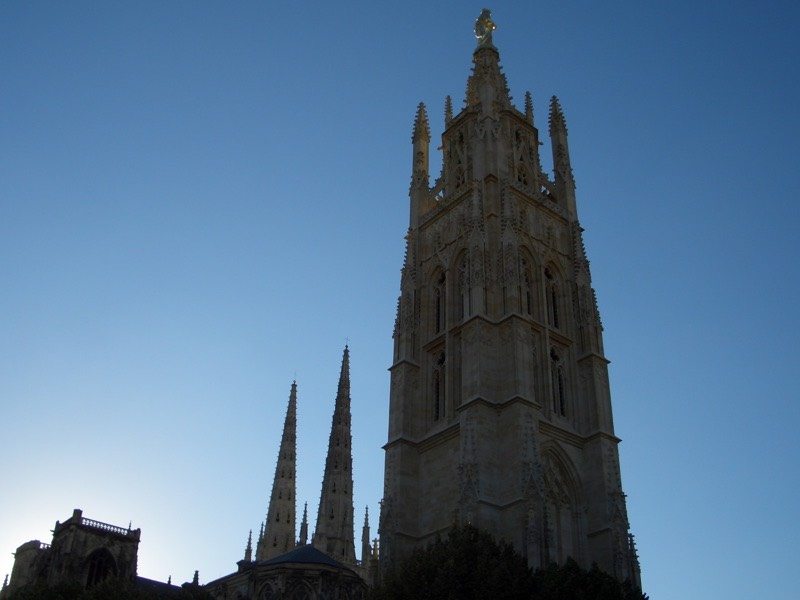

今天算早起的，八點就乖乖下床開始收拾行李，大概是昨天被晒昏了，
想趁著早上涼爽多趕一些路，再說昨天提早打烊收工，今天得補上來才行。
九點整離開旅館，搭伙的早餐太貴了，而且怎麼吃都是那麼一回事，就省起來吧。
臨走前，跟老闆要了兩個茶包，老闆也送給了我，那麼今天就不用猛灌開水了 :)
在SNCF跟TGV飆車的年代，古老的火車頭就只能當展示品了。
原來昨天只要再多騎個半小時，就可以到桑特了，照例，凡是大城都有河流過。
去麵包店買了巨大的麵包，大概跟有兩個頭那麼大，拿在手上沈甸甸的，份量十足。
看起來可以當作三天乾糧的麵包，才1.15歐元，一路上奮力的啃完它，撐到下午五點都還再飽。
找了兩天的網路訊號，直到桑特火車站才總算找到，台灣催搞得那麼兇，趕緊上傳遊記吧。
中午約十二點時，看到了目標的告示牌，距離波爾多，108公里。
說老實話，比我想像中的近多了∼只希望這是實際數值，不要又是走高速公路的理想距離。
背後綿延無盡的向日葵花田，再繼續種個幾公里之後，就要被葡萄園給取代了。
說葡萄，葡萄就出現了。長那麼大沒看過葡萄園長什麼樣子。
原來葡萄樹這麼矮，大約一公尺左右而已，而葡萄通通長在下方，大多都是紫色的葡萄。
一整片望去的葡萄園，跟台灣的茶園還真的挺像的。
騎沒多久，看到一片旗海飄揚，幹嘛來著？聯合國是嗎？應該是歐盟各國的國旗。
突然想到我也有帶國旗，一直靜靜的夾在旅遊書裡面，拿出來飄一下吧 :D
今天一路上都沿著N139公路前進，很順利的，並不是汽車專用道，沿路風景也很漂亮。
走到下午兩點半，水消耗的比想像中快，看到加油站的商店去想去買點什麼都好。
結果看到水龍頭跟水管，跟店員說能不能借我裝一下水？
『OK！』
省下了買飲料的錢，那麼就買隻超級無敵貴的冰淇淋解個暑氣吧，2歐元。
除了葡萄園之外，連酒瓶都出現了，開始漸漸有葡萄酒故鄉的感覺了∼
以我身高一米八八來計算，這酒瓶約有三點五公尺的高度。
達成今天的100公里，每天希望都能騎100公里以上，別太偷懶。
天空連一片雲都沒有，昨天還穿著襯衫擋太陽，今天已經自暴自棄的脫掉，要晒就晒吧。
本來想打赤膊騎車，這樣晒起來比較均勻，不會兩手黑壓壓，身體白皙皙，但還是沒敢脫。
很美的景致對吧，自己看到照片都覺得有點不可思議，怎麼會騎到像是綠野仙蹤的地方來。
騎到這邊是有目的的，一是為了休息，二是因為尿急。
（用滑鼠點照片，可以開大張的回去當桌面唷∼ ^^）
N139走著走著，看著本來是108的牌子，數字逐漸遞減，就在只剩下約20公里的時候。
被擋下了，哎....進城前，N139變成高速公路，偷偷騎一小段，馬上被重機騎士提醒這邊不能走。
好吧，不給走就算了，還差20公里，研究一下怎麼繞小路進城吧。
改切N10，走沒多遠，N10也變高速公路，法國交通局你夠狠。
再轉D911，繞一小圈，途中經過一座藍色的長長鐵橋，挺有特色的，感覺過橋後就是目的地了。
準備好要過橋了嗎？
終於在下午六點抵達波爾多。阿伯看到我在拍照片，跟我說雖然牌子設立在這邊，
但還要往前直直的騎下去，才會到熱鬧的地方。
抵達了目的地，眼光就要放亮一點，開始找旅館吧∼
在同一條路上看到感覺蠻便宜的旅館，一問之下是30歐元，
這價位還在能接受的範圍之內，只要吃省一點就不至於破產。
進到房間有點被嚇到，有夠大間的，而且天天都睡雙人床的我，房間內居然有兩張雙人床可以睡。
再怎麼厲害也沒辦法這樣睡呀∼不知道為什麼不改建成青年旅館，這種大小，起碼能塞10個人當大通鋪。
找便宜旅館的技巧，其實都是一些廢話。不用講大家也知道。
比如說：越舊的、越髒的、越小的、越偏僻的、星等低的、餐廳或是酒吧附設的都能有令人滿意的價錢。
卸下包包，空車出去閒晃的時候又到啦 :D 一樣是騎車，這時候就覺得特別開心∼
少了沈重的背包，FCR1感覺也特別靈活，波爾多好大好大呀∼據說有22萬的居民。
這次除了空車之外，還把iBook也給帶了出門，想說順便找找看有沒有網路可以用。
才剛出門就在路邊找到超快的無線網路，正坐著上網時，聽到『碰∼！』的一聲。
抬頭一看，有個中年男子騎腳踏車不知怎麼搞得居然自己撞到跌倒了。
好心的路人幫他叫救護車，還察看他有沒有受傷，結果五分鐘過去了都沒反應。
是不是撞到腦袋了呢？語言不通，還是別去攪局的好。
最後他突然跳了起來！對著圍觀的人大吼大叫，揮舞著雙手像要打人一樣，大家都被他給嚇跑了。
從旅館出發，要過了這座橋才會到市區。
凡是大城，沒錯，一定有河流經過∼可是水相當混濁，全是泥沙。
感覺有點歷史的城門，在那後面的是熱鬧的街道，邊逛邊找吃的。
人來人往的熱鬧街道，沒進去逛，轉往看起來有點髒亂的便宜市集鑽去。
不是純法國人的法國人越來越多，像是阿拉伯、土耳其、非洲...等等。
大城市一定會有的壯觀建築物，這時候就會覺得Z55怎麼鏡頭這麼小，沒辦法把它一次拍進去。

這邊也是電車滿街跑的地方，，再加上公車、汽車、腳踏車、行人，通通一起走，居然也相安無事。
聽mika說，現在是桃子盛產的季節，果然每家店都在拍賣桃子。
看到最便宜的一公斤才0.95歐元，挑了兩顆看起來不錯吃的，秤重之後是0.39歐元，折合台幣一顆八元。
也有買奇怪的西瓜，深綠色像是椰子一樣，但是卻是貨真價實的紅肉西瓜。
奇怪的餅鋪，有點像中國餅，又不太像，不知道是哪個國家的食物。

諾大的鐘樓，敲起鐘聲來一定很響亮吧？
等到八點開始敲鐘時，卻是很文靜的聲音，比鬧鐘大聲一點而已 /_\
看到一家KEBAB的老闆正在桿麵皮昨手工披薩，進去參觀一下，徵求他的同意拍張照。
也買了現做的披薩半片（3.5歐元）再買一個可以吃的飽的KEBAB（3.5歐元），大薯一份（2.3歐元）。
法國的醬汁主要是番茄醬（我覺得太酸），還有白色有點像是馬鈴薯泥的醬汁，淡淡的蠻合我胃口。
全部一起算，老闆還便宜我一塊錢，實拿8.3歐元∼豐盛的晚餐搞定了！
有了大餐，有了水果，似乎還缺了飲料，我知道喝水不用錢，但都喝了一天的水了，奢侈一下吧。
到相當本地的雜貨店，買了一大瓶1000CC，才1.1歐元的蘋果汁，口味還真是多樣化。
桃子、櫻桃、鳳梨、柳橙、西瓜、葡萄，全部通通都是1.1歐元的超低價∼
店裡頭還有自己醃製的橄欖類食物，不知道好不好吃，所以沒有買。
噹噹∼自己張羅的晚餐登場了，卯起來吃了好久才吃完，花不到十歐元就吃了豐盛的大餐。
有點豪華過頭了些∼也罷，這是一天中最值得期待的一餐呀。
明天不往南騎了，靠近邊界的治安不好，所以會轉東南方，沿著河去參觀中世紀古堡。
三天內應該能到土魯斯（Toulouse）∼早一點到有好事會發生唷 :)